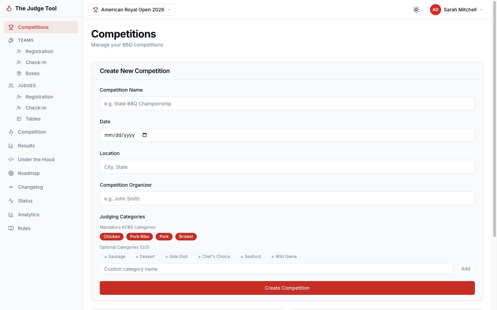
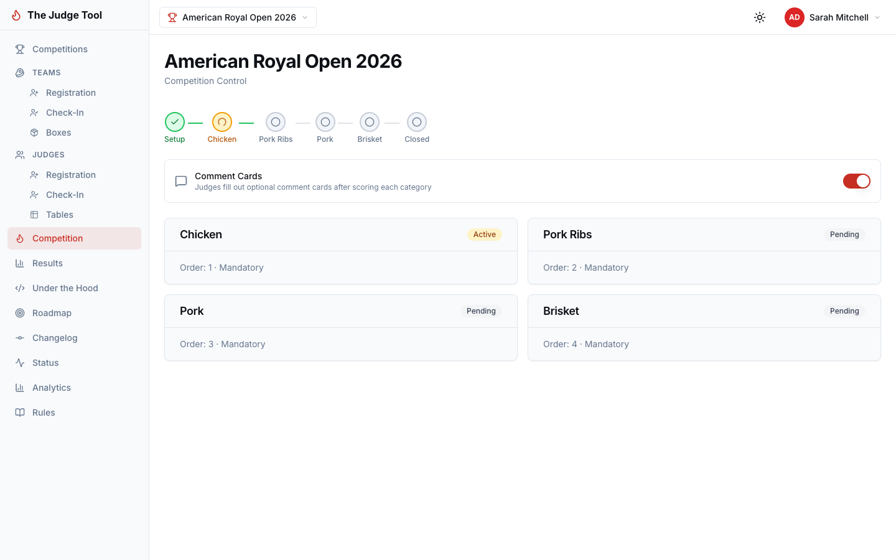
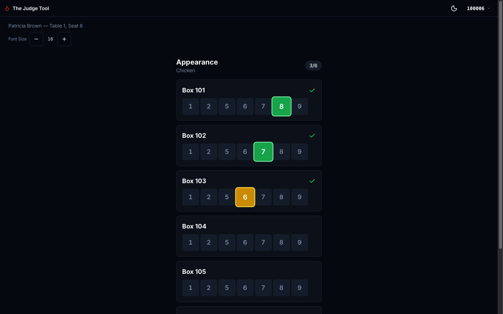
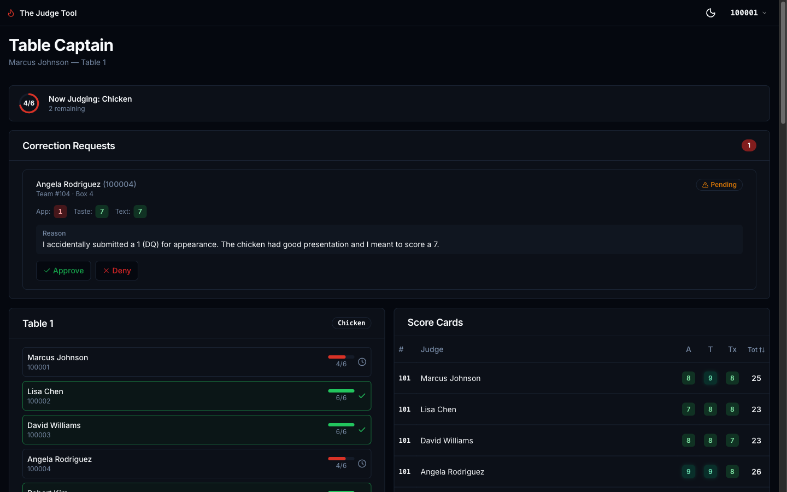
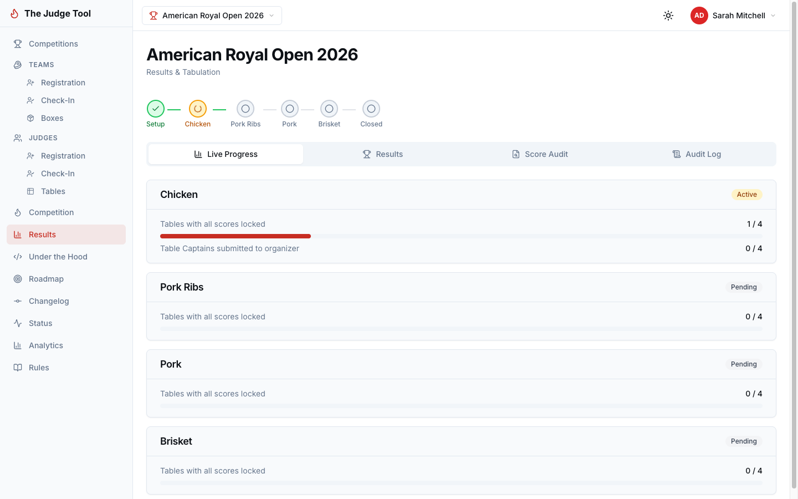

The Judge Tool replaces pen, paper, and spreadsheets with a purpose-built digital platform for KCBS BBQ competition judging. Real-time scoring, instant tabulation, zero math errors.

Every BBQ competition organizer knows these pain points.
Misread scores lead to wrong rankings. A 7 that looks like a 1 can cost a team their trophy.
Manual data entry into Excel after each round. One transposition error and your results are wrong.
Weighted averages, dropped lowest scores, tiebreakers. All calculated by hand under pressure.
Paper cards get dropped, stained, or blown away. No backup means re-judging or disqualification.
Organizers can't see progress until cards are physically collected. Delays cascade through the day.
No audit trail. Corrections are crossed out and initialed. Disputes have no definitive record.
See what changes when you go digital.
| Task | Pen & Paper / Excel | The Judge Tool |
|---|---|---|
| Score entry | Hand-write on paper cards | Tap a number on your phone |
| Score collection | Walk cards to head table | Submitted instantly over WiFi |
| Data entry | Type into Excel one by one | Automatic — zero data entry |
| Weighted calculation | Manual formula per judge | Instant, KCBS-correct math |
| Drop lowest score | Find & remove by hand | Automatic across all teams |
| Tiebreakers | Re-check taste, then texture... | Resolved automatically per KCBS rules |
| Score corrections | Cross out, initial, hope it's legible | Digital request → captain approval → audit trail |
| Results announcement | 30-60 min after last turn-in | Ready the moment scoring completes |
| Audit trail | A box of paper cards | Complete digital log of every action |
Purpose-built views for organizers, judges, and table captains.
Create competitions, register teams and judges, manage table assignments, and advance through categories. Track live progress across all tables and see results the instant scoring completes.


No more fumbling with paper cards. Tap your scores for Appearance, Taste, and Texture on a clean, mobile-friendly interface. Scores are locked on submit — no ambiguity.
See every judge's progress at a glance. Review all score cards, approve or deny correction requests, and submit the round when your table is ready.


No more waiting 30-60 minutes while someone punches numbers into a spreadsheet. Results are calculated in real time as scores come in.
From setup to trophy ceremony in four steps.
Create your competition, register teams and judges, assign tables. All online before the event.
Judges log in with their CBJ number, pick a seat, and score directly on their phones.
Table captains review scores, handle corrections, and submit each round to the organizer.
Tabulation happens instantly. Announce winners minutes after the last turn-in — not hours.
Join the BBQ competitions that have moved past pen, paper, and prayer. Set up your first event in minutes.
Get Started